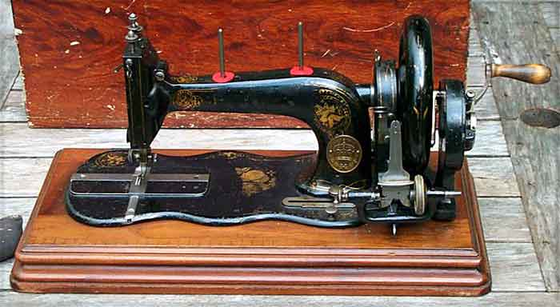
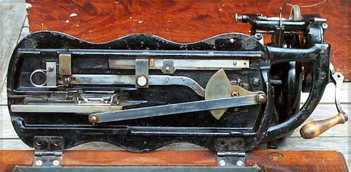
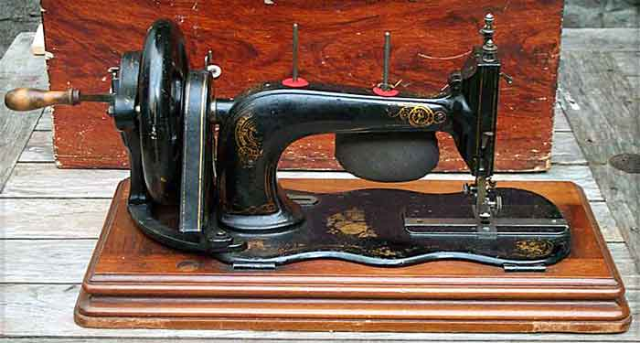
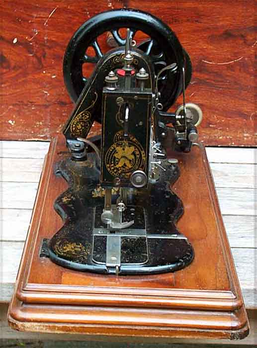
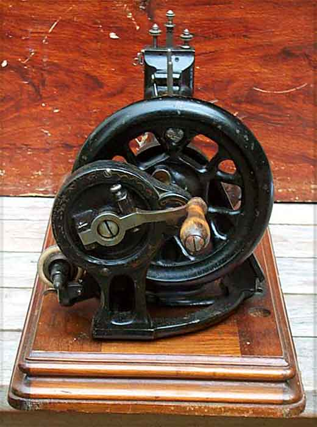
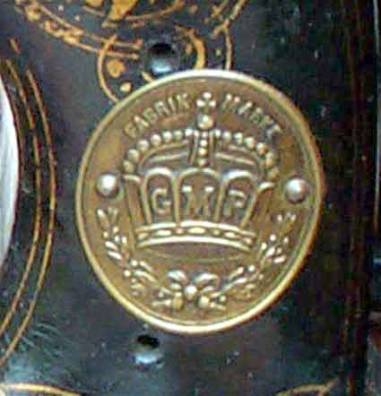
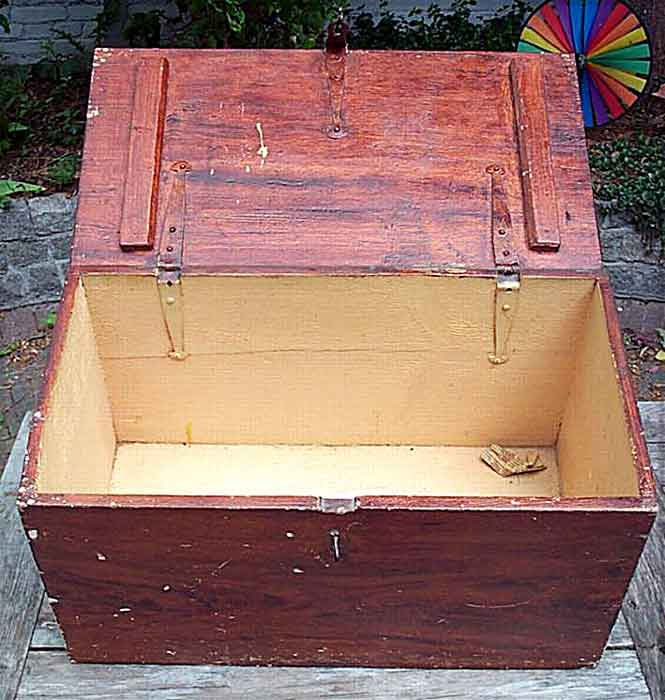

G. M. Pfaff AG, Kaiserslautern
Serial # A949781 - 1909
Pictures courtesy of Christoph Schmidt
Front View / Under View / Rear View / Faceplate / Balance Wheel / Logo / Case
Front View

Under View

Rear View

Faceplate

Balance Wheel

Logo

Case

©
Alan Quinn 2002 All Rights Reserved
This page may not be reproduced or distributed in part or in whole without the prior written permission of the copyright owner